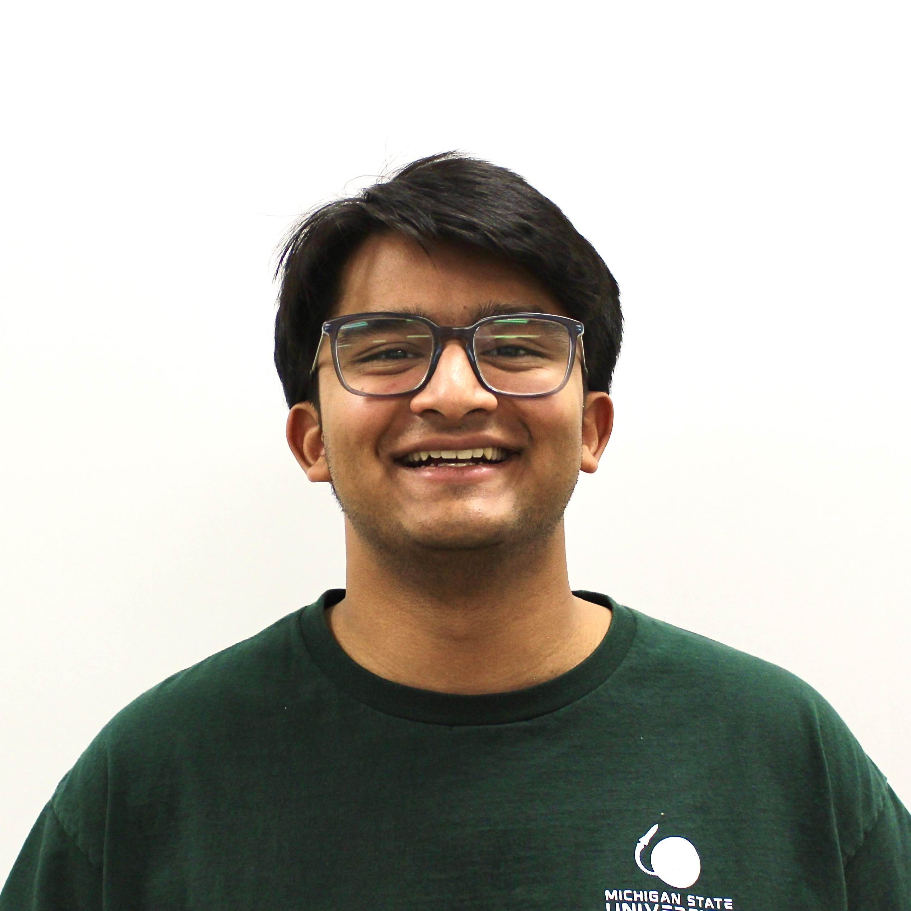
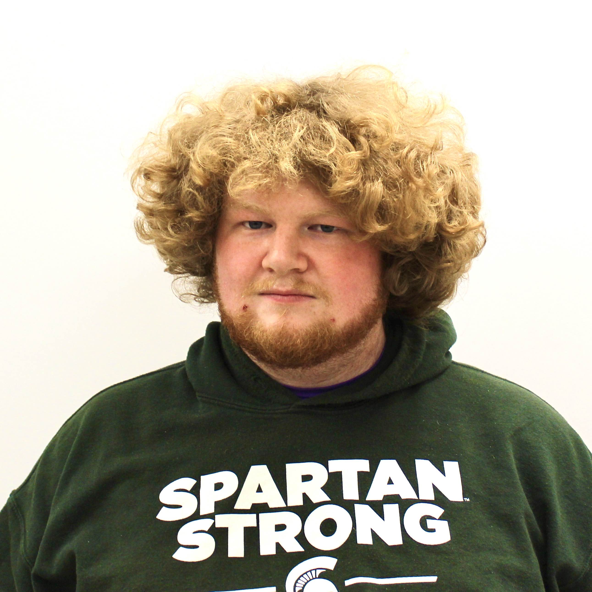
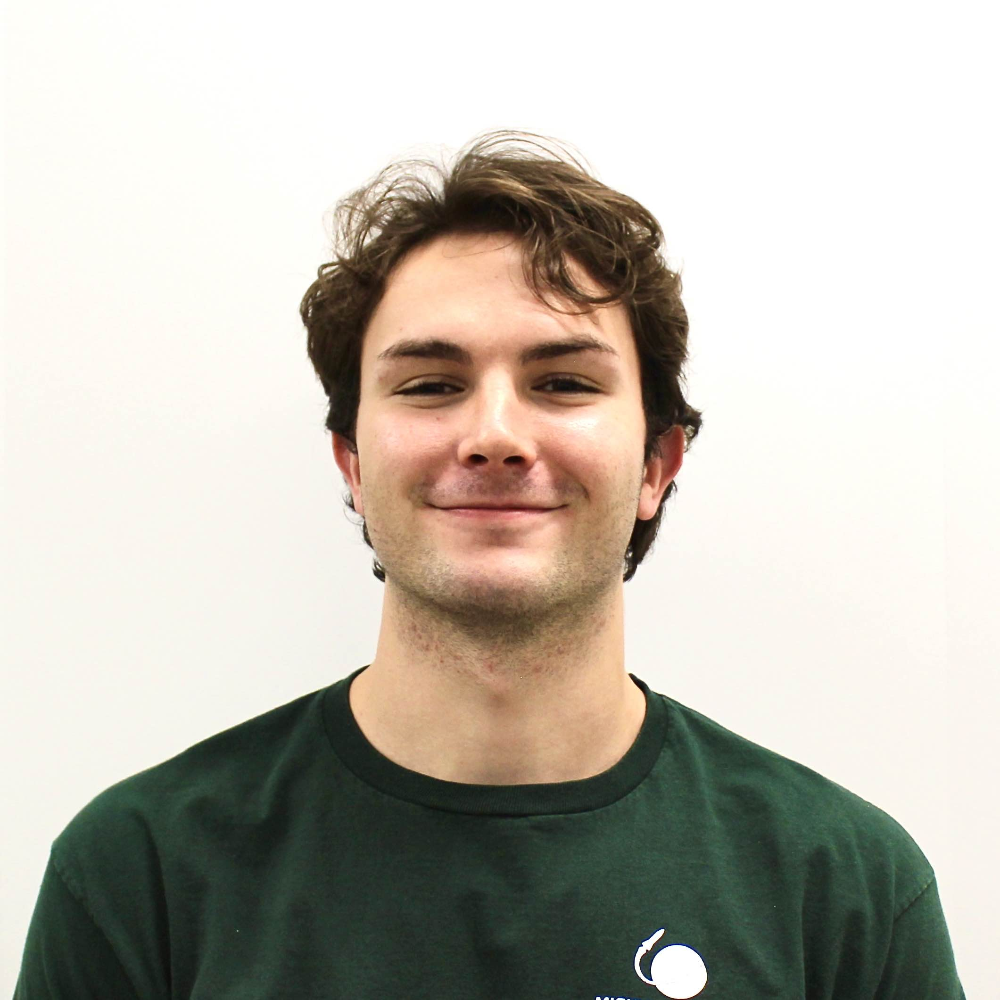
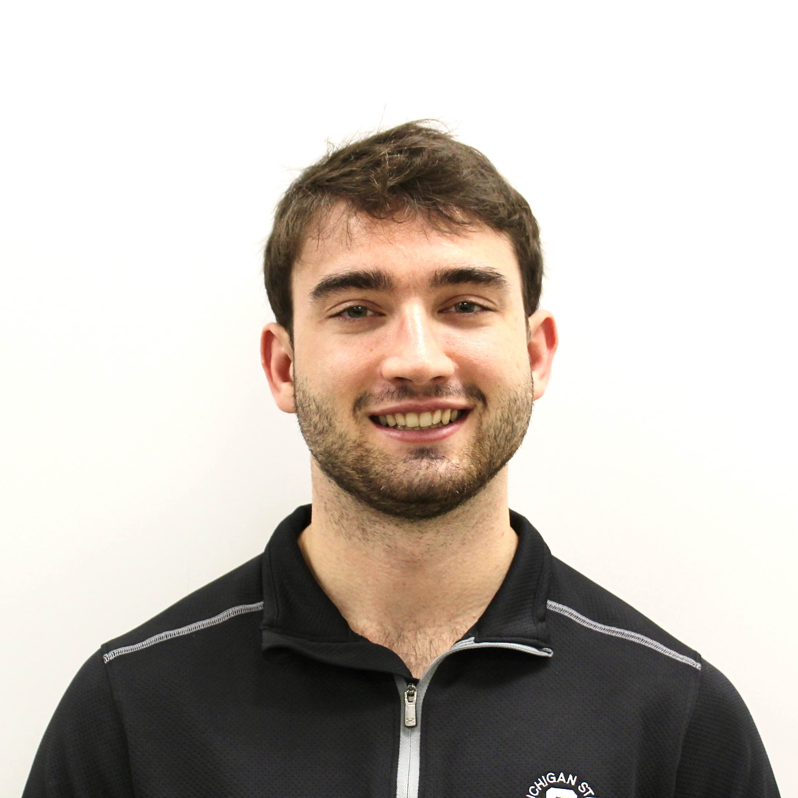
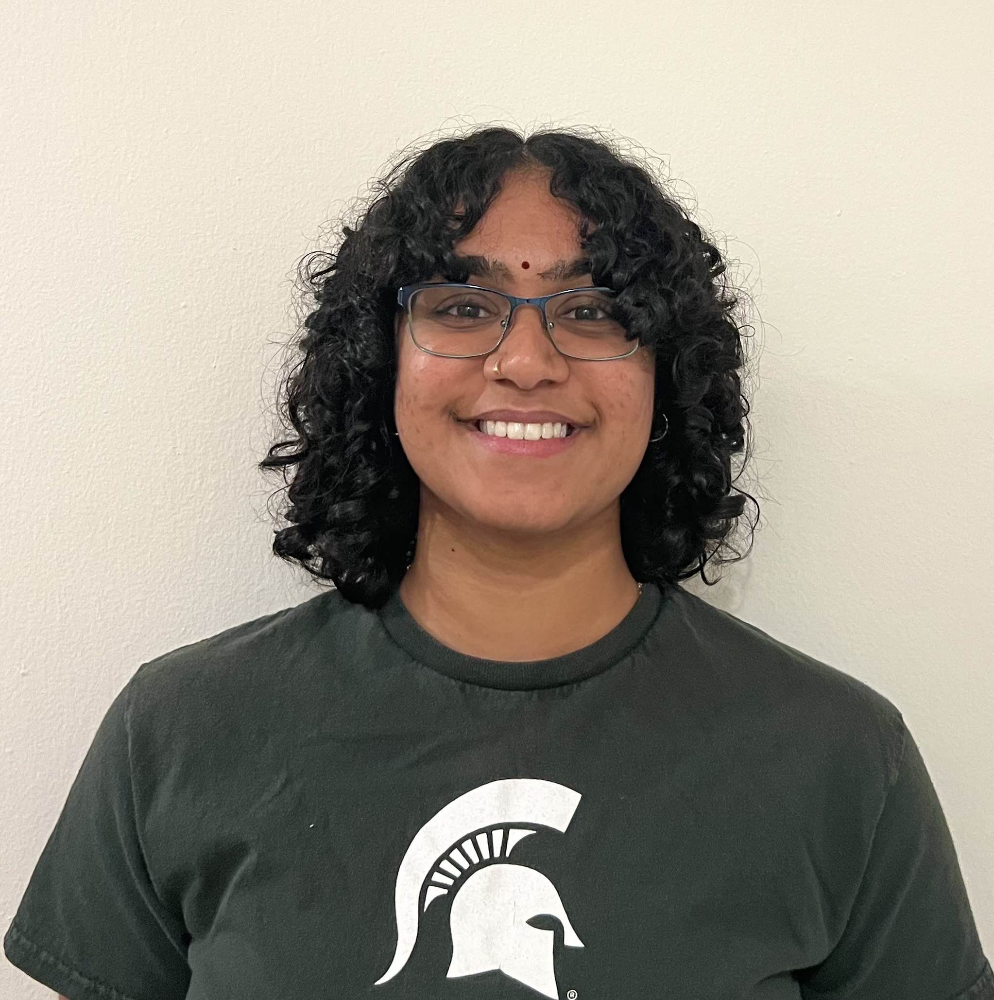
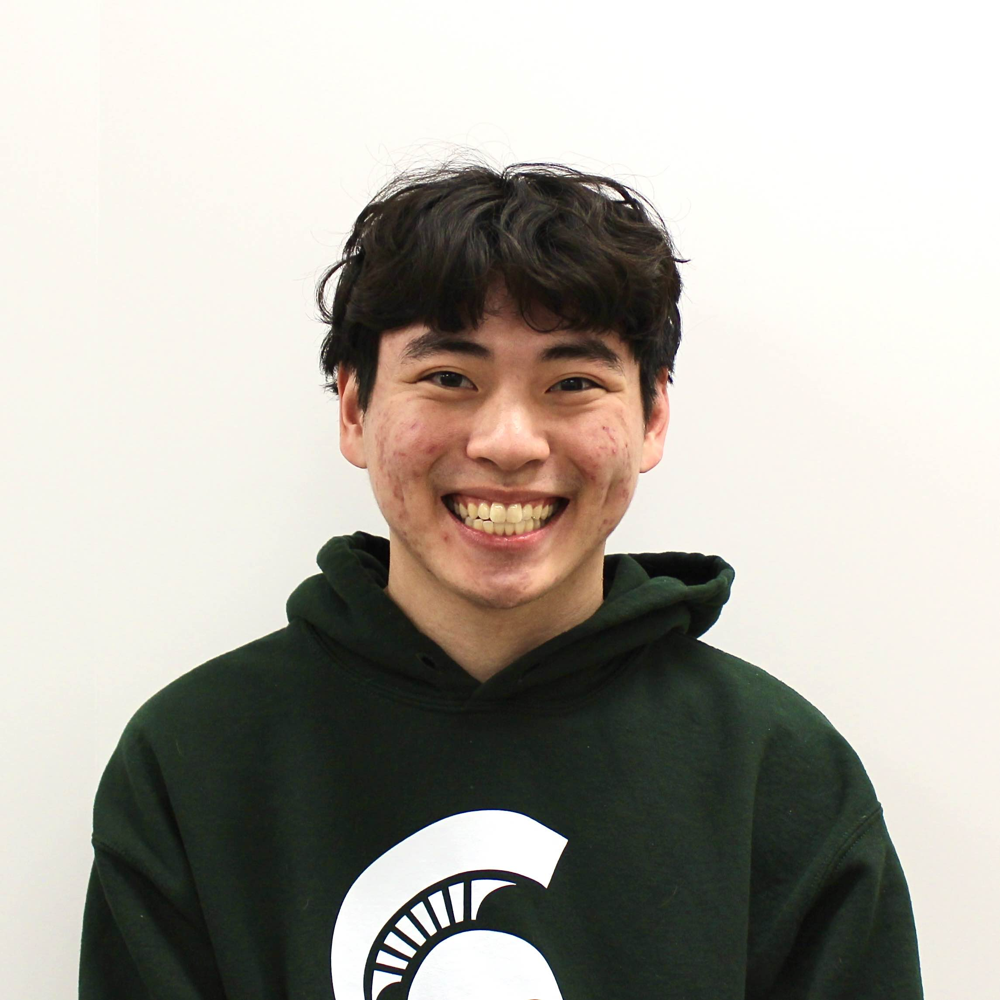

Interim President
Vinay Rao
Vinay is a senior majoring in mechanical engineering and serves as the club's interim president. His goal is to make the club a valuable professional and social experience, equipping members with STEM skills. Passionate about engineering, he enjoys meeting like-minded individuals and collaborating on projects that inspire creativity.
Chief Engineer
Bobby Dessy
Bobby is a senior majoring in mechanical engineering and serves as the club's chief engineer. He oversees all engineering projects across subteams to foster learning and growth. His goal is to keep projects on track while ensuring a fun experience. Bobby is grateful for the teammates and friends he has made throughout his time in the club.

Vice President
Finn Kasregis
Finn is a junior majoring in mechanical engineering and serves as the club's vice president. His goals are to increase the number of rockets launched each year as a club. He greatly enjoys the community that has grown within the club. From the late meetings in the engineering building to the social events, being part of MSU Rocketry is more than just an engineering team!
Scientific Payload Lead
Luke Etheridge
Luke is a junior majoring in mechanical engineering and serves as the payload lead for the club. His goal is to design and develop an innovative payload for the rocket, contributing to the team’s success. He enjoys collaborating with fellow members, sharing ideas, and learning from others. Being part of the club has deepened his passion for engineering and teamwork.

Scientific Payload
Kieran Russel
Kieran is a junior majoring in mechanical engineering and serves as the payload lead. He aims to see MSU's sounding rocket launch with a functional payload and create a strong foundation for future sub-teams. Kieran is dedicated to fostering an inclusive and enjoyable experience for all members. He loves the experimental design process in payload projects.

Manufacturing and Design Lead
Kurt Kehren
Kurt is a senior majoring in mechanical engineering and serves as the manufacturing lead. His primary goal is to design and build a competitive rocket for the Spaceport America Cup while ensuring a high standard of precision and quality. Kurt is passionate about fostering connections among aerospace enthusiasts and helping members develop hands-on engineering skills.
Manufacturing and Design Lead
Andrew Hilbert
Andrew is a junior majoring in mechanical engineering and serves as the design and manufacturing lead. He focuses on building the rocket through CAD and machining while ensuring precision and quality. Andrew enjoys collaborating with teammates and values the hands-on experience and problem-solving that come with manufacturing.

Manufacturing and Design Lead
Sandhya Jagannathan
Sandhya is a junior majoring in mechanical engineering and serves as the manufacturing lead. She aims to contribute by machining rocket components and expanding the club's expertise in aerospace engineering, particularly in design. Sandhya cherishes the friendships she has formed and the memorable experiences she has shared with her teammates.

Electronics and Software Lead
Chance Smith
Chance is a sophomore majoring in computer science with a minor in math. As the electronics and software lead, his goals are to develop a flight computer for our rocket to control airbrakes and parachute deployment. He hopes to create an engaging environment for general members where they can collaborate towards competing at competitions.

Electronics and Software Lead
Chancen Dahmer
Chancen is a junior majoring in electrical engineering currently working on a student designed flight computer. As the electronics and software lead, he focuses on developing reliable electronics systems with the team and is dedicated to creating an environment where all members feel included, important, and passionate.
Business Development Lead
Sameer Torke
Sameer is a senior majoring in computer engineering. As the business lead, he focuses on securing sponsors and organizing fundraising events to help the team take on bigger projects and improve their designs. He enjoys planning creative events with the team and values the friendships he's made in the club.
Business Development Lead
Madison Kepros
Madison is a senior majoring in applied engineering sciences. As the business lead, her goal is to enhance the professionalism of the club by streamlining processes and supporting other leads. Her aim is to free up more time and resources for the team to focus on building the rocket. She loves the kind and supportive friendships she has made through the team.